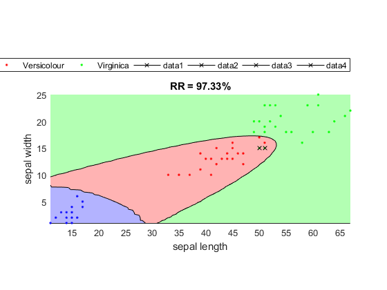

qcTrain
Training the quadratic classifier (QC)
Contents
Syntax
- cPrm=qcTrain(DS)
- cPrm=qcTrain(DS, opt)
- [cPrm, logLike, recogRate, hitIndex]=qcTrain(DS, opt, showPlot)
- DS: data set for training
- opt: parameters for training
- opt.prior: a vector of class prior probability
- (Data count based prior is assume if an empty matrix is given.)
- showPlot: 1 for plotting
- cPrm: cPrm.class(i) is the parameters for class i, etc.
- recogRate: recognition rate
- hitIndex: index of the correctly classified data points
Description
cPrm=qcTrain(DS) returns the parameters of the quadratic classifier based on the given dataset DS. The parameters for class i is stored in cPrm.class(i).
cPrm=qcTrain(DS, opt) uses the train parameters opt for training the QC. opt only contains a field prior to represent the prior probability of each class. If opt is empty, the the default prior probability is based on the data counts of each class.
cPrm=qcTrain(DS, opt, showPlot) plots the decision boundary of the QC (if the feature dimensionity is 2).
[cPrm, logLike, recogRate, hitIndex]=qcTrain(DS, ...) also returns the log likelihood, recognition rate, and the hit indice of data instances in DS.
Example
DS=prData('iris'); DS.input=DS.input(3:4, :); trainSet.input=DS.input(:, 1:2:end); trainSet.output=DS.output(:, 1:2:end); testSet.input=DS.input(:, 2:2:end); testSet.output=DS.output(:, 2:2:end); [cPrm, logLike1, recogRate1]=qcTrain(trainSet); [computedClass, logLike2, recogRate2, hitIndex]=qcEval(testSet, cPrm, 1); fprintf('Inside recog rate = %g%%\n', recogRate1*100); fprintf('Outside recog rate = %g%%\n', recogRate2*100);
Inside recog rate = 97.3333% Outside recog rate = 97.3333%